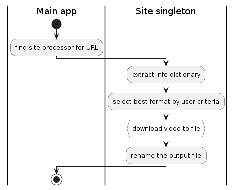
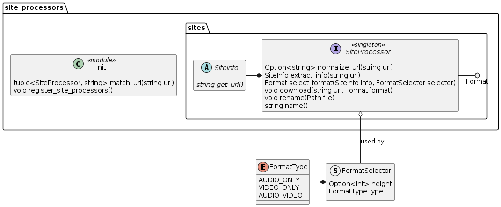
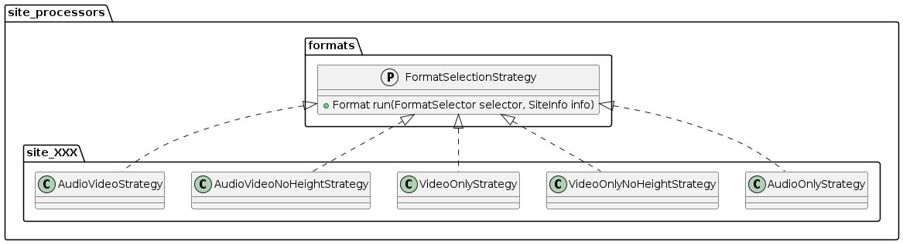
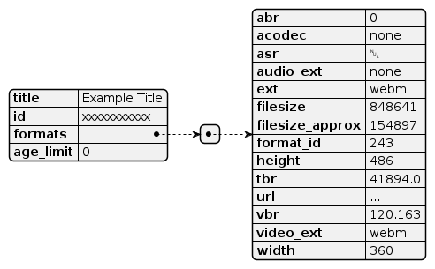

Download Video
Easily download videos from Youtube and other sites.
Download Video as a project defines jdv as a commandline application for
downloading videos and OSTs.
1 Terminology
- Video
- In this document, refers to any video or audio file, including videos with or without audio.
- Site processor
- A singleton class that contains methods for handling
site-specific implementations of the
SiteProcessorinterface.
2 User Interface
jdv is comprised of three subcommands:
videofor downloading videosostfor downloading OSTsconfigfor setting/getting config variables
2.1 DONE video
- State "DONE" from "TODO"
- State "DONE" from "TODO"
Download videos from the internet using several criteria to filter formats. This comprises the "main" function of the application.
Usage: jdv video [-hny] URL jdv video [-hny] [--height HEIGHT] [--video-only] URL jdv video [-hny] [--audio-only] URL jdv video [-hny] -r FILE
The lone positional argument is treated as a string URL by default; if -r is passed, it's treated as a path.
2.1.1 Options
| Short | Long | Note |
|---|---|---|
-n |
--dry-run |
Prints only what will happen |
-r |
--rename |
Renames the file instead of downloading from URL |
--height NUMBER |
Selects the best format according to the video height. | |
--audio-only |
Selects only audio formats | |
--video-only |
Selects only video formats |
2.2 TODO ost
Download audio OSTs from the internet, optionally setting metadata for the downloaded files.
2.2.1 DONE Options
- State "DONE" from "TODO"
Usage: jdv ost [OPTIONS] URL [FILE]
| Short | Long | Note |
|---|---|---|
-n |
--dry-run |
Prints only what will happen |
-t |
--title TITLE |
Embeds TITLE as the title metadata into the file |
-a |
--artist ARTIST |
Embeds ARTIST as the artist metadata into the file |
-A |
--album ALBUM |
Embeds ALBUM as the album metadata into the file |
-g |
--genre GENRE |
Embeds GENRE as the genre metadata into the file |
2.3 TODO config
Set configuration variables.
Usage: jdv config VARIABLE [VALUE]
2.3.1 TODO Variables
Under construction.
3 Technical Specification
3.1 Dependencies
Download Video uses:
Standard library:
urllib.parse- It conains urlparse, which we use to normalize URLs
3.2 DONE Overview
- State "DONE" from "TODO"
- State "DONE" from "TODO"

3.2.1 DONE Getting Site Processor
- State "DONE" from "TODO"
The URL is matched with a list of preregistered singletons known as site processors. That is to say, certain Python modules are treated as singletons. When one of them matches with the URL, it is used for the remainder of the process.

3.2.2 DONE URL Normalization
- State "DONE" from "TODO"
The site processor has a function for normalizing URLs, which is done before extracting the info dictionary. The exact method will change depending on the site processor (see Supported Sites).
3.2.3 DONE Extracting Info Dictionary
- State "DONE" from "TODO"
Refer to Figure Figure 2.
The abstract method extract_info takes a URL and returns a SiteInfo, a
dictionary-like object with a get_url method. It is intentially opaque, so
only the site processor itself knows what to do with it. However, some parts of
the dictionary are made visible via getter methods.
3.2.4 DONE Selecting A Format
- State "DONE" from "TODO"
The abstract method select_format selects a suitable format based on the
criteria provided by the user. This criteria comes in the form of a
FormatSelector object.
A format is chosen from the dictionary via the strategy pattern. There are 5 strategies in total.

3.3 TODO Configuration
This part of the project has not been added.
A configuration file controls the exact behavior of Download Video. There is a global section followed by sections for each supported site. Their respective values are explained under Supported Sites.
The config subpackage handles the entire configuration framework. In the
standard config directory, a Toml file is used called config.toml.
3.4 Supported Sites
3.4.1 TODO Youtube
Right now, Youtube is the only site supported by Download Video. This will likely change in the future when this project has taken shape and is out of alpha.
The site processor for Youtube matches URLs with the following formats:
- https://www.youtube.com/watch?v=XXXXXXXXXXX
- youtu.be/XXXXXXXXXXX
- yt:XXXXXXXXXXX
This site processor normalizes the URL so that it always has the first form. The info dictionary returned by Youtube has this structure:

- DONE URL Normalization
- State "DONE" from "TODO"
URL normalization is done by matching a URL with a regular expression and capturing the video ID, then returning a "proper" URL with said video ID.
- DONE Format Selection
- State "DONE" from "TODO"
Selecting a format is done by trying to get the best (highest quality) video which satisfies the criteria outlined in
FormatSelector(see Figure 2).Figure 5: Format Selections A series of strategies are used to filter the list formats according to the criteria given. The name of each strategy class pretty much says what the strategy will be. Then the highest quality format is chosen. The barometer for a format's quality is its total bitrate, denoted in the
tbrelement.